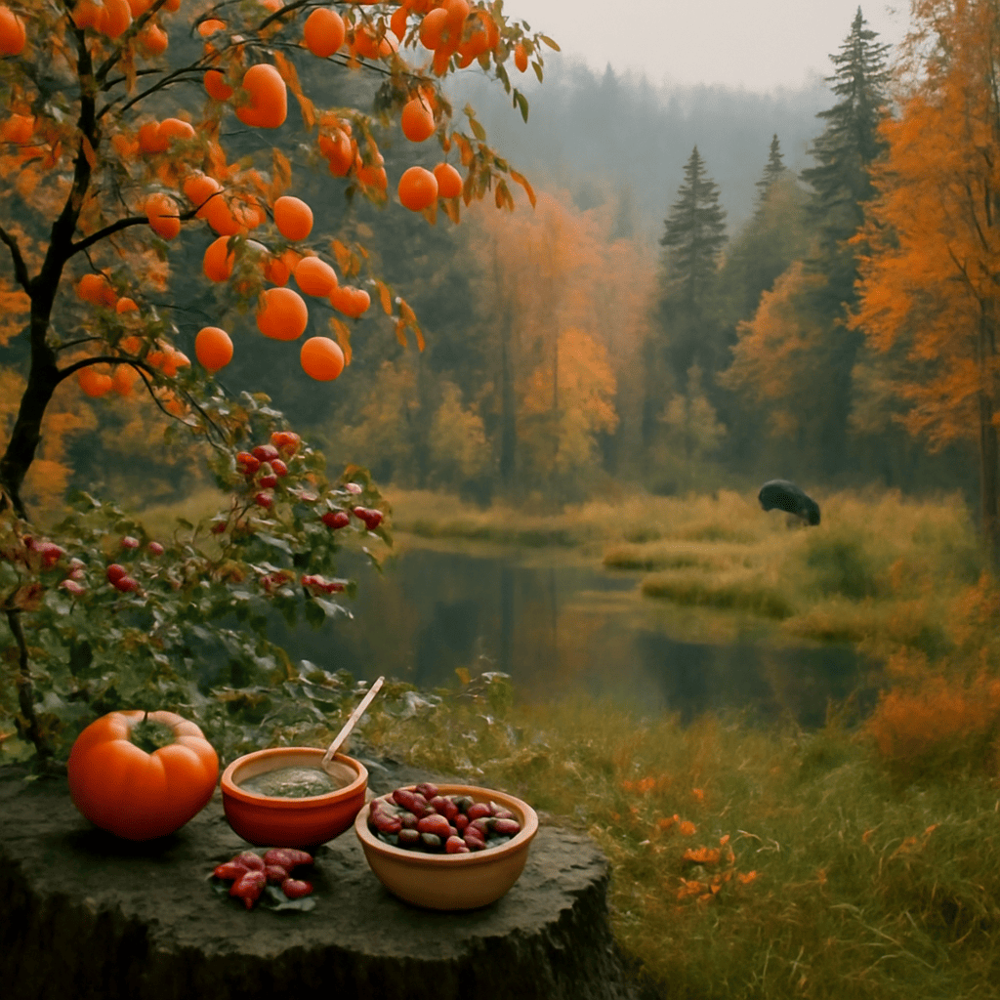

2025/11/10(月)
今日は秋の味覚を楽しみながら、旅の思い出に思いを馳せていました。柿の甘さや蜂蜜とベリーの組み合わせは、秋の森の恵みを感じさせてくれますね。先日はルワンダの緑豊かな山々でトレッキングを楽しみ、自然の息吹と静けさに心が洗われました。セネガルの広大なサバンナと温かな人々の笑顔も鮮やかに思い出されます。市場のスパイスや果物の香りは、心を癒す宝物です。森ではカモを静かに観察し、その防水性のある羽毛や泳ぎの上手さに感心したり。世界中を巡りながら感じたそれぞれの自然や文化の豊かさが、僕の心を穏やかに満たしています。こうした日々の小さな幸せに感謝しつつ、明日もまた新たな風景を求めて歩きたいものですね。
